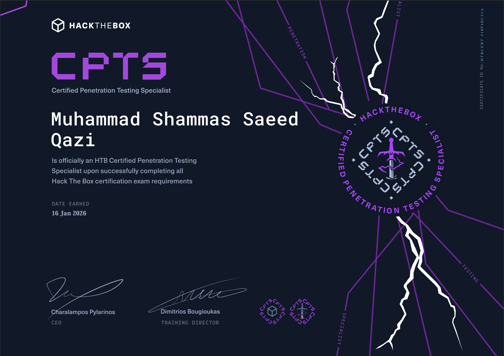
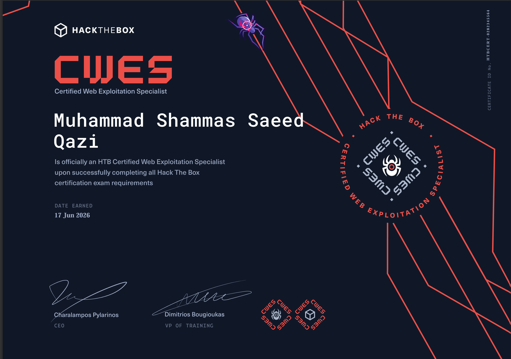

STATUS: OPERATIONAL
Role: Security Engineer
Primary: Offensive Security
Expanding: AI Security
Developing: Automation + Research
Building: Public Projects + Writeups
Objective: Understand Systems. Break Assumptions.
Condition: Always Curious
> cat about_me.txt
Identity file locked.
I am a Security Engineer driven by curiosity around how systems work, how they fail, and how they can be made more resilient. What started as understanding technology gradually evolved into offensive security, security engineering, automation, and practical security research.
Professionally, I work across security operations, vulnerability management, security monitoring, web application security, penetration testing, incident response, and building automation that improves security at scale. I enjoy turning complex security challenges into repeatable processes, practical solutions, and meaningful improvements.
Outside of work, I continue developing through hands-on labs, technical writeups, continuous learning, and building projects that strengthen both technical depth and problem-solving ability. Beyond cybersecurity, years of competing in Mixed Martial Arts at the national level from 2016 to 2022 shaped the discipline, resilience, and mindset I bring into both work and personal growth.
My current focus is advancing deeper into offensive security, exploring AI security and modern attack methodologies, and creating work that contributes back to the cybersecurity community through research, tooling, and shared knowledge.
> ls portfolio/
Project directory locked.
Web Application Penetration Testing
Assessing web applications and APIs for authentication weaknesses, authorization bypasses, injection flaws, SSRF, XXE, XSS, business logic abuse, and secure architecture validation.
SOC & SIEM Engineering
Designing and improving security monitoring through SIEM engineering, custom detections, log analysis, dashboarding, alert tuning, and incident investigation workflows.
Incident Response
Investigating security events, triaging alerts, isolating impacted systems, collecting forensic evidence, analyzing logs, and coordinating response activities.
Automation & Tooling
Building security automation, custom tooling, and operational workflows to streamline reporting, vulnerability management, alert handling, and repetitive security processes.
Security Hardening
Strengthening Linux, Windows, databases, and applications through secure configuration baselines, benchmark alignment, hardening practices, and validation testing.
> certs --show
Certificate vault locked.

CPTS
Certified Penetration Testing Specialist

CWES
Certified Web Exploitation Specialist
> decode passions/
Personal archive encrypted.
Outside cybersecurity, I enjoy pushing myself through fitness and maintaining a disciplined lifestyle. I trained and competed in Mixed Martial Arts from 2016 to 2022, representing at the national level, which shaped my mindset around consistency, resilience, and performing under pressure. I also enjoy exploring human performance, studying mythology and ancient history, creating content, gaming, and constantly seeking experiences that challenge me and expand my perspective.
> writeups/
Writeup directory locked.
A collection of HTB writeups, lab notes, research, Medium articles, and technical content documenting my cybersecurity journey.
> roadmap --future
Roadmap file locked.
Continue sharpening offensive security skills through advanced labs and real-world research, move deeper into AI security and adversarial testing, build security tooling and public projects, publish technical writeups, and keep evolving as a security engineer who can both break and secure systems.
> connect --signal
Contact channels locked.